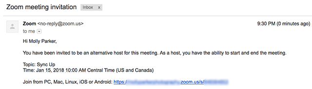

Zoom es un servicio de videoconferencia basado en la nube que puede usar para reunirse virtualmente con otras personas, ya sea por video o solo audio o ambos, todo mientras realiza chats en vivo, y le permite grabar esas sesiones para verlas más tarde.

1. Abra el cliente de Zoom e inicie sesión en Zoom.
2. Haga clic en el icono Agendar. Se abrirá la ventana del programador.
3. Seleccione la configuración de su reunión. Tenga en cuenta que algunas de estas opciones pueden no estar disponibles si están deshabilitadas y bloqueadas en la posición «desactivado» en el nivel de cuenta o grupo.
Tema: introduzca un tema o nombre para la reunión.
Inicio: seleccione una fecha y hora para la reunión. Puede iniciar la reunión en cualquier momento antes de la hora programada.
Duración: introduzca la duración aproximada de la reunión. Este ajuste solo está destinado a programación. La reunión no finalizará transcurrido ese periodo de tiempo.
Zona horaria: de manera predeterminada, Zoom utilizará la zona horaria del ordenador. Haga clic en el menú desplegable para seleccionar una zona horaria diferente.
Reunión recurrente: elija si desea configurar una reunión recurrente (el ID de reunión será el mismo en cada reunión).
Vídeo
- Hospedador: elija si desea habilitar o deshabilitar el vídeo del anfitrión al unirse a la reunión. Incluso si elige desactivar la función, los anfitriones podrán iniciar el vídeo.
- Participantes: elija si desea habilitar o deshabilitar el vídeo de los participantes al unirse a la reunión. Incluso si elige desactivar la función, los participantes podrán iniciar el vídeo.
Audio: elija si desea permitir que los usuarios llamen solo por teléfono, solo por el audio del equipo, por ambos o mediante audio de terceros (si está habilitado en su cuenta).
Opciones avanzadas: haga clic en la flecha para ver opciones adicionales para la reunión.
- Requerir contraseña de reunión: aquí puede seleccionar el uso de contraseña e introducir la contraseña de la reunión. Los participantes deberán introducirla antes de unirse a la reunión programada.

1. Inicie sesión en el cliente de escritorio de Zoom.
2. Haga clic en el icono Programar. Se abrirá la ventana del programador.
3. Haga clic en Opciones avanzadas.
4. En el campo Anfitrión alternativo, introduzca el nombre alternativo para buscar entre los usuarios. Si no encuentra el nombre, también puede introducir la dirección de correo electrónico del anfitrión alternativo.
6. A continuación, el anfitrión alternativo recibirá un correo electrónico para notificarle que se le ha añadido como anfitrión alternativo.